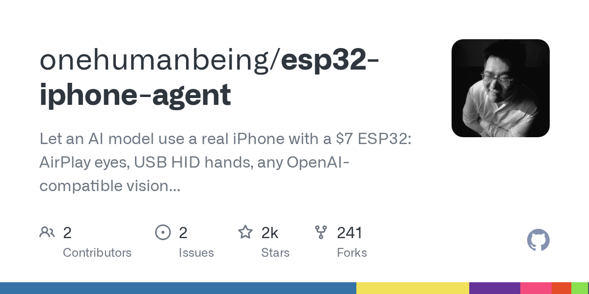

ESP32 iPhone Agent｜用 7 美元硬體讓視覺模型操作真實 iPhone
一句話摘要
開源專案 **esp32-iphone-agent** 提出一條不依賴 Mac、開發者帳號或 jailbreak 的真機控制路徑：iPhone 透過 AirPlay 提供畫面作為 agent 的「眼睛」，ESP32-S3 以 USB HID 模擬鍵盤與滑鼠作為「手」，再由相容 OpenAI API 的視覺模型負責看圖、規劃與輸入操作。

已查核的專案資訊
GitHub repository 為 [onehumanbeing/esp32-iphone-agent](https://github.com/onehumanbeing/esp32-iphone-agent)，描述與原始貼文一致：使用約 7 美元的 ESP32、AirPlay 畫面與 USB HID 輸入，將真實 iPhone 交給任一 OpenAI-compatible vision model 操作。擷取時專案為 Python、MIT License，約 1,930 GitHub stars、254 forks；這些數字會隨時間變動，應回到 repository 即時確認。
它的關鍵不在於繞過 iOS 安全模型，而是利用系統本來接受的兩種外部介面：螢幕投放與有線 HID 輸入。因此它並不等同取得 iOS 系統權限，也不應被解讀為能存取受保護內容。
工作架構：眼睛、手與大腦
- **眼睛：AirPlay**：將 iPhone 畫面送至接收端，供螢幕擷取與視覺模型理解；這代表迴路速度、網路品質與畫面解析度會直接影響成功率與 token 成本。
- **手：USB HID**：ESP32-S3 模擬鍵盤、滑鼠，對 iPhone 送出點擊、輸入、滑動等通用操作；它依賴 UI 可被正常操作，不是直接呼叫 App 私有 API。
- **大腦：視覺模型與控制迴路**：模型根據畫面判讀下一步，控制端執行後再重新觀察。可靠性取決於定位、畫面變動、等待條件、錯誤偵測與停止機制，不只取決於模型本身。
能做什麼，也不能推論什麼
這類方案適合研究「沒有 API 的現有 App，能否以人類相同的介面完成低風險、重複性任務」。它可用於測試表單填寫、導覽流程、提醒設定或 UI 回歸驗證等場景。
但不應把它當作可無人監督的個人助理：登入、密碼、付款、Apple Pay、雙因素驗證、敏感通訊與不可回復的刪除／送出，都應是硬性停止點。受保護畫面可能看不到或不能正常操作，且任何透過 AirPlay 投放的畫面都要視為可能包含敏感資料。
安全試驗與導入檢核表
- 先使用專用測試 iPhone、測試 Apple ID 與隔離 Wi-Fi，勿將個人主力機直接接入 agent。
- 僅授權低風險、可回復任務；對送出訊息、購買、刪除、帳號設定與隱私資料設置人工核准。
- 將每輪觀察、模型判斷、HID 操作與畫面截圖寫入可稽核紀錄，並提供隨時停止的 kill switch。
- 限制 AirPlay 接收端與控制服務的網路曝露面；檢查截圖、日誌與模型供應商的資料保留政策。
- 對每個任務加入完成條件、最大操作步數、逾時與失敗回復流程，避免 UI 變動造成無限循環。
- 在實機任務前比較成本：逐步截圖的視覺推論可能昂貴，應量測每次成功任務的 token、延遲與人工接管比例。
為什麼值得收進 AI 學習雷達
它把 computer use 的討論從雲端瀏覽器或模擬器，延伸到真正的行動裝置互動：硬體是低成本的，但安全邊界、觀察延遲、視覺推論成本與高風險動作核准，才是能否實際採用的難題。對 AI agent 設計者而言，最有價值的啟示是把「能點」轉成「能被安全驗收地完成」的閉環。
原始連結
- Threads 分享頁：
https://www.threads.com/share/_osWc2O0M/
- Threads 原始貼文：
https://www.threads.com/@leeunhn/post/DedlpeDCa58
- GitHub repository：